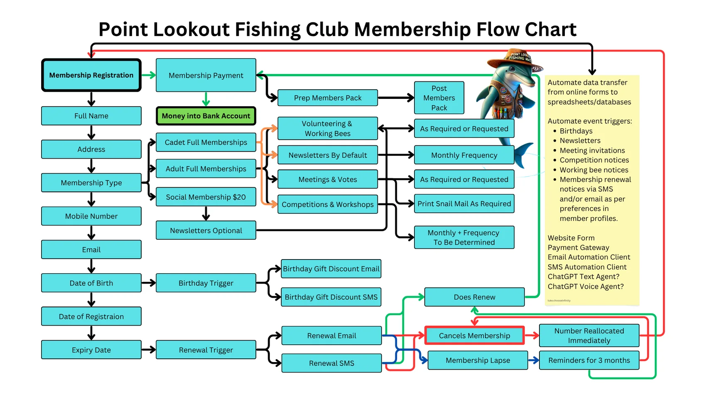
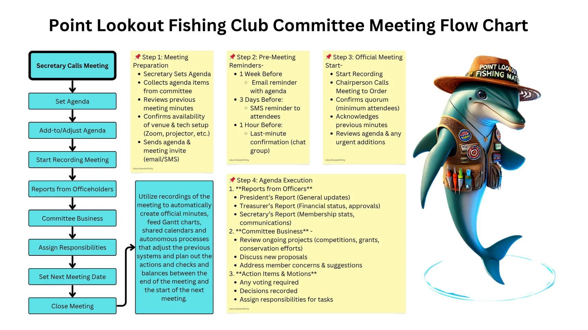

Collect once
Full name, address, mobile, email, birth date, registration date, membership type and communication preferences.
Process operating system
The supplied flow charts become practical website logic: less manual chasing, clearer responsibilities, cleaner member records and repeatable meeting rhythm.
Member lifecycle
The member flow is the backbone for forms, payments, newsletters, birthday notices, competition access and renewal reminders.
Full name, address, mobile, email, birth date, registration date, membership type and communication preferences.
Adult, cadet, junior, social and casual comp pathways receive different benefits and notices.
Birthday offers, newsletters, meeting invitations, competition notices, working bees and renewal reminders.
Renewed, cancelled, lapsed, reminder window or membership number reallocated.

Committee rhythm
The meeting process can be supported by agenda intake, reminder messages, recording, minutes, action items, calendar updates and carry-forward context.
Before
During
After

Automation candidates
The aim is not to automate everything at once. The aim is to remove avoidable secretary burden while keeping the committee in control.
Form submissions move into a member register with clear consent and update history.
Email and SMS reminders can start from expiry date and stop when payment is recorded.
Member groups receive relevant competition, workshop and working bee updates.
Agenda, previous minutes, officer reports and open actions are gathered before each meeting.
Birthday discount messages can be tested after privacy and consent wording is approved.
Participation, reach, events, volunteer effort and outcomes can be logged for future applications.